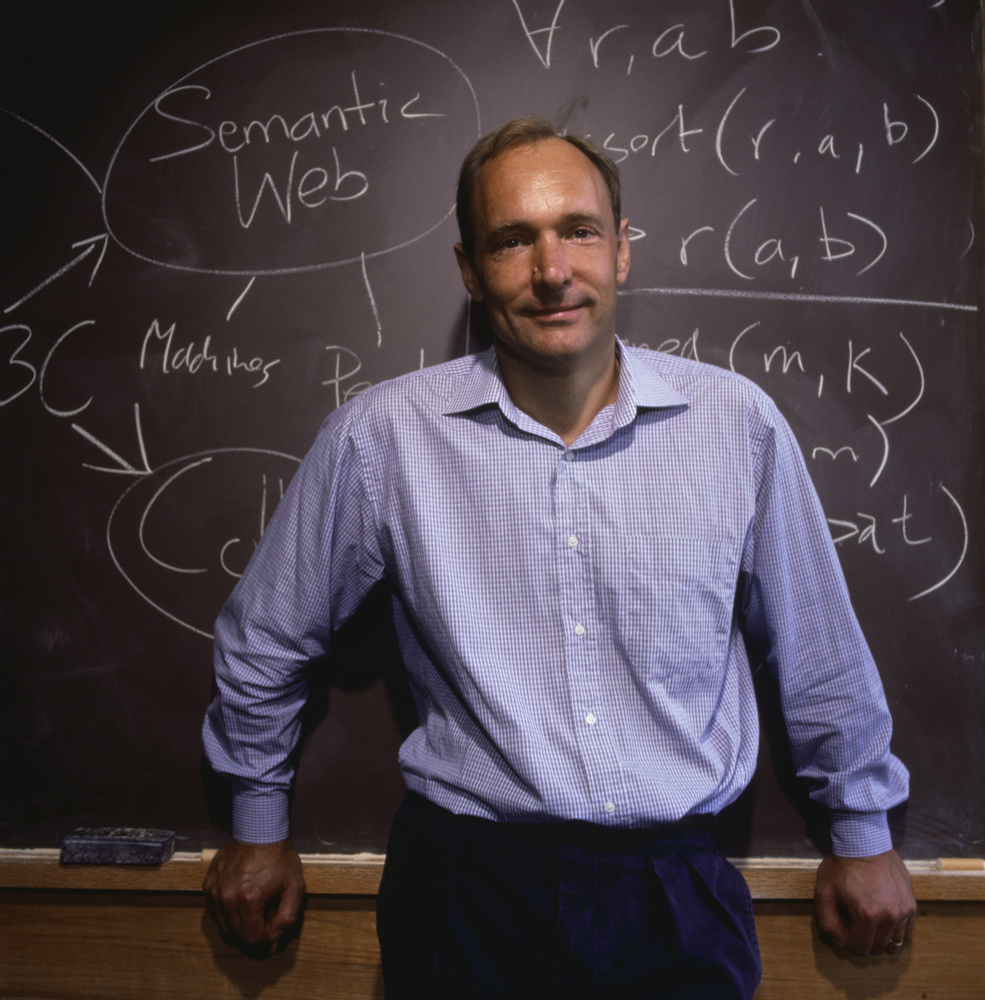
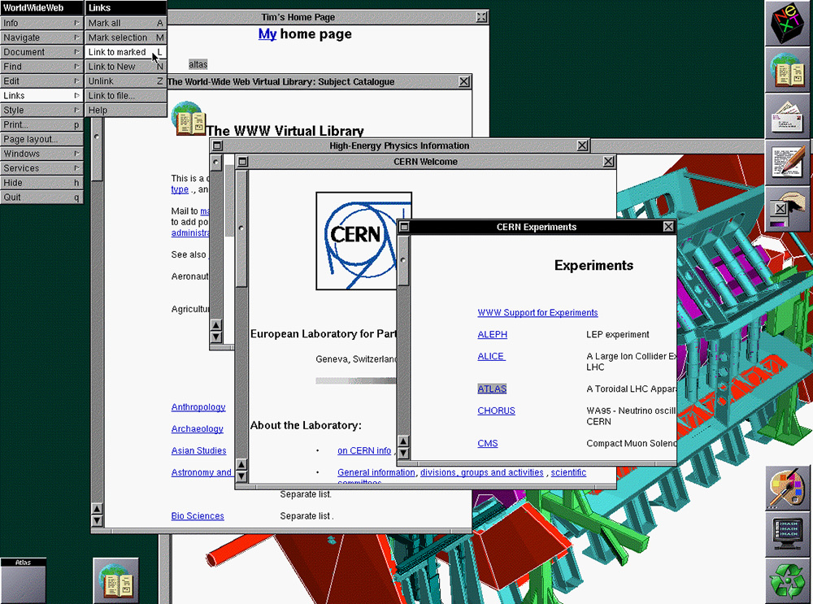
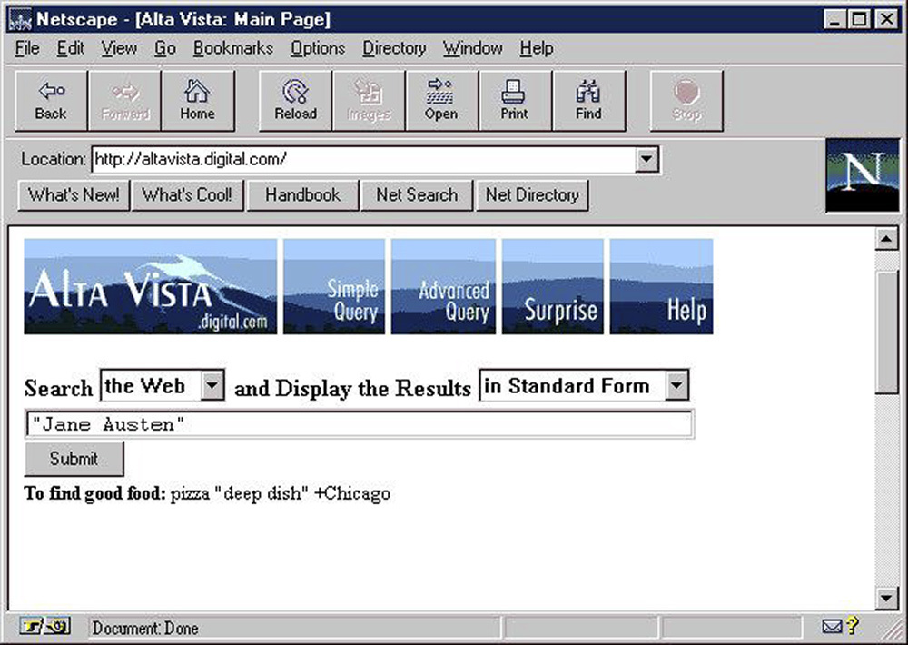
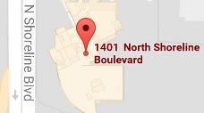

O Museu da História do Computador abriga a maior coleção mundial de artefatos relacionados á história da computação. É uma organização sem fins lucrativos com uma história de quaatro décadas como a instituição líder mundial que explora a história da computação e seu impacto contínuo na sociedade.
O Digital ComputerMuseum é aberto no escritório da Digitar Equipment Corporation em Marlborough, Massachusetts
1984
O Museu do Computador retira o "Digital" de seu nome e se desloca para o Museu Wharf, no coração de Boston.
1999
O Museu do Computador em Boston fecha. Algumas das exposições vão para o Museu de Ciência de Boston. O restante da coleção viaja para o The Computer Museum History Center em Mountain View na California.
2000
O Computer Museum Historu Center é renomeado para Computer History Museum
O museu preserva materiais que capturam a história da rede, incluindo:
Softwares, dados e sites
fotografias, filmes e videos
Papéis e cartas pessoais e comerciais
artefatos físico
A história da rede de computadores apresenta três enredos principais:
Sistemas in-line (como a Web), a partir da década de 1950.
Redes (a internet), a partir da década de 1950.
"Fios: a infra-estrutura de telecomunicações surgiu em meados do século 19 por conta do telégrafo e do telefone.
Galeria de Imagens

Filho de cientistas da computação, Tim Berners-Lee estudou física em Oxford, mas depois mudou para computação. A imensidão de documentos incompatíveis na CERN (Organização Europeia para Pesquisa Nuclear) levou-o a tentar unificá-los usando hipertexto.

O primeiro navegador desenvolvido em 1990 também foi um editor para criar uma "web" pessoal de documentos vinculados.

Alta Vista foi o buscador mais popular na web antes do Google. Embora a sua base de usuários tenha crescido rapidamente, o AltaVista não prosperou.
Galeria de Áudios
Uma demonstração das capacidades do software de composição Mockingbird (década de 1980).
Zolt Levay, lider no Instituto de Ciências do Telescópio Espacial, fala sobre o Projeto Hubble de 1998.
Um bilhão e meio de pessoas no mundo têm telefones, mas não têm conta bancária. George Sekut, membro da tribo Masaai, fala sobre como usa um sistema de pagamento baseado em SMS.
Localização
Computer History Museum
1401 N Shoreline Blvd.
Mountain View, CA 94043
